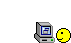

When you run the main application from the GUI launcher, you can see this :
Something like help...
> What can I do ? _
It means this application works !
It may not displays this, please reinstall this program in this case because it must be corrupted.
Disable your anti-malware during the second installation.
This application works with command lines : if you want to do something, you must input a command
in the console.
Example :
> square(6)
36
It returns the square of 6 !
If you want to read the help, tick the option "If you need any help" in the launcher and it will display
the help about the functions :
In version 1.0.1)
| Help about NyanMaths CL 1.0.1:
|
| Description :
| Here, there is the documentation of this application !
|
| Functions :
| square(x):
| Returns the square of x
|
| cube(x):
| Returns the cube of x
|
| sqrt(x):
| Returns the square root of x
|
| power(x, y):
| Returns x to the power y
|
| fact(x):
| Returns the factorial of x
|
| prime(x):
| Returns 1 if x is prime, 0 else
|
| exit():
| If you want to quit (logical...)
|
You have halp about all functions : their parameters and what they do !
It is magic !
But, it is not finished...
There is mathematical tools in this app : you can launch them as other functions,
by typing their name :
>>> tool_name ()
...
In the last version, there is 7 tools :
- primes
- dividers
- UIR (Relationship between intensity, elecric tension and resistance)
- PUI (Relationship between intensity, elecric tension and power)
- VDT (Relationship between speed, distance and time)
- MVD (Relationship between density, weight and volume)
- temperature (Convert °F to °C, for example)
If you need some help about an application, run it !
>>> primes ()
This application calculates all prime numbers
from an odd positive no null number to... An other greater odd positive number !
Beware : the last numbers will be deleted !
Calculate the prime numbers from...
All tools have a short description, cool !
If you want, you can do some operations :
In the command line interface, input "operations()" to get all
operations you can do.
For example :
>>> 5 + 5
10
>>> 9 * 2
18
>>> 6**2 Equals to 6² or power(6, 2)
36
You can use the return-values of the functions :
>>> fact(5) + 3
123
>>> 9.2 - abs(9)
0.2
You can also use complex numbers like this :
If you want to use "i" notation, write a * i insthead of aj)
>>> (3 + 2j) / 2
(1.5 + j)
You can also use logical operators :
Greater than : >
Lesser than : <
Equals : == (Yes, two !)
Not equals : !=
>>> 5 + 5 == 10
True
>>> 6 * 7 < 20
False
There is a lot of constant values since 3.1 version :
Note : You can have the complete list if you check "Display constants values" in the launcher.
If you want to use one of this constants :
>>> 68 * g.earth
666.8521999...
>>> m.ly * 13.7 * 10**9
1.2961200747435696e+26 The radius of the visible universe in meters !
There's a functionnality to create objects like cubes, cones or vectors.
If you want to use it, tick the check box "Load all modules when you start" in the launcher.
It is sample : create an object like this :
>>> my_object = Square (5) A square with a length of 5 arbitrary unit has been created !
You can see you have to give the side of the square : you will give different data for different objects.
Here is the list of the objects which you can create :
When you have created your beautiful square, what can you do with it ?
If you want to get a data from your object, do this :
>>> my_object.data_name
For example :
>>> my_square = Square (6)
>>> my_square.side
6
You get the side of your square !
But, you know already it, why not ask surface ?
>>> my_square = Square (3.5)
>>> my_square.surface
12.25
Wonderful !
But, what can I know about my cubes or prisms ?
Do not panic, look at this :
Square :
side
apothem
diagonale
perimeter
surface
circumcircle (a Disk object)
inscribedCircle (a Disk object)
Rectangle :
length
width
perimeter
surface
diagonale
circumcircle (a Disk object)
inscribedCircle (a Disk object)
Cube :
edge
volume
surface
diagonale
Cuboid :
length
width
heigth
surface
volume
diagonale
Ball :
radius
diameter
surface
volume
Disk :
radius
diameter
perimeter
surface
Cone :
radius
diameter
baseSurface
height
volume
lateralSurface
Cylinder :
radius
diameter
baseSurface
height
surface
volume
Prism :
baseSurface
height
volume
Pyramid :
baseSurface
height
volume
Ellipsoid :
a
b
c
volume
Ellipse :
a
b
perimeter
surface
Polygon :
nSides (Number of sides)
side
apothem
perimeter
surface
circumcircle (a Disk object)
inscribedCircle (a Disk object)
You can also get the documentation of these objects as follows :
> doc(Cylinder, Cube or Ellipse)
If you want to change data of your objects, do this (or write this) :
>>> ball = Ball(23)
>>> ball.radius
23
>>> ball.radius = 10
>>> ball.radius
10
Fantastic !
You can change object's data like this.
But, you can't change everything : if you try this :
>>> my_rect = Rectangle (2, 3)
>>> my_rect.surface = 65
Impossible to change it !
My application is angry !
Indeed, you can not do that : it is not allowed because
we can not change the surface of a rectangle, it is not possible.

If you want to display all properties of your object, just write its name :
>>> my_square = Square (5.5)
>>>my_square
Type : Square
Side : 5.5
Perimeter : 22.0
Surface : 30.25
Apothem : 2.75
Diagonale : 7.778174593052023
Note that since v2.6, it displays a GUI instead of console.
You can do operations with your objects (homothety), it is sample :
>>> s = Square (2)
>>> s * 3
Type : Square
Side : 6
Perimeter : 24
Surface : 36
Apothem : 3
Diagonale : 8.485281374238571
It transform your object by homothety !
Be careful : the previous example doesn't modify your object.
You can transform your object like this :
>>> s *= 3 Multiply the measures 3 times
>>> s /= 3 Restore the old measures
Since 2.4.1, there is a new class : the Polynomial.
You can initialize it like this :
>>> p = Polynomial (1, 5, -3)
It created a 2nd degree polynomial (x² + 5x - 3)!
But you can only create a 2nd degree polynimial with it, sorry...
You can now access to the roots or the summit of this polynomial !
>>> p
Type : Polynomial (2nd degree)
Expression : 1x² + 5x + -3
Discriminant : 37
Reduced discriminant : 9.25
Root 1 : -5.541
Root 2 : 0.541
Summit : (-2.5 ; -9.25)
Derivee : 2x + 5
There is a few functionnalities around it :
- Evaluate polynomial with a value : p.evaluate (x)
- Get the discriminant : p.dsc
- Get the reduced discriminant : p.reducedDsc
- Get a : p.a
- Get b : p.b
- Get c : p.c
- Get the first root : p.root1
- Get the second root : p.root2
- Get the summit of the parabola : p.summit
To finish, there is a special object type : the vector.
I do not explain to you what is a vector, Internet is you friend !
You can create a vector as a ball or a square :
>>> my_vector = Vector (5, 7.5)
>>> my_vector
(5 7.5)
Length : 9.014
The length is... the length of you vector on an orthonormal plane.
So, you can use the vectors like this :
>>> v1 = Vector (5, 6)
>>> v2 = Vector (-6, 3)
>>> v1 + v2
(-1 9)
Length : 9.055
>>>v1 * 5
...
You can add, substract, multiply and divide vectors with vectors or numbers ; test it !
It is all, now, you can use the full application !
Bye bye !